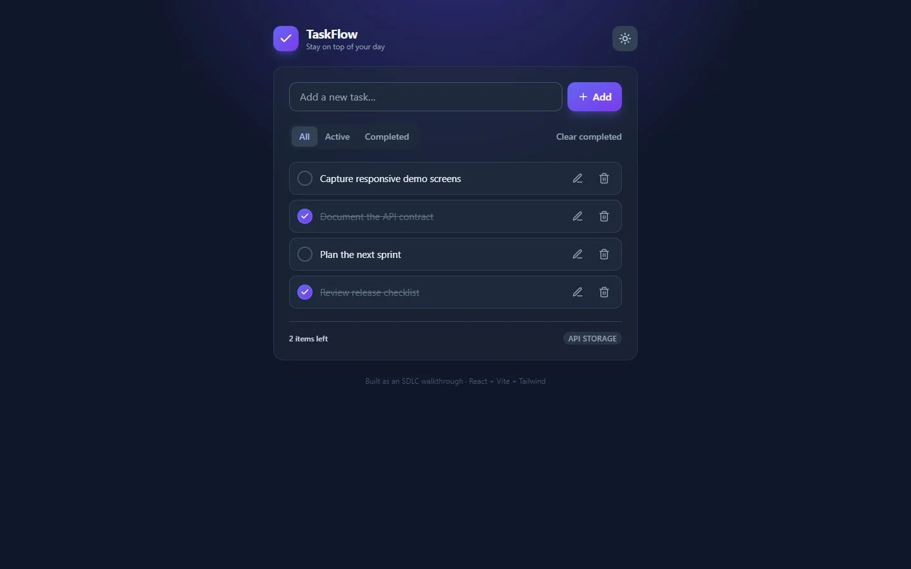

Engineering project · Runtime screenshot
TaskFlow
A task manager with browser-local storage or an optional file-backed Express API.
Local demonstration · Static runtime preview
View GitHub source
Problem
Tasks should survive normal restarts and failed loads should be recoverable without losing edit feedback.
Architecture
A React task hook uses interchangeable storage adapters. The Express demo validates records and replaces JSON snapshots before publishing mutations in memory.
Engineering decisions
- Keep components independent of the selected storage adapter.
- Clear completed tasks through one atomic server operation.
- Add Retry loading and visible edit errors that retain the draft.
Implemented workflow
- Add, edit, complete, reopen and delete tasks; filter active/completed items.
- Separate local/API lists, retained theme and responsive inline editing.
Verified result
29 client tests, 16 server tests, both production builds and browser/restart checks passed; package audits reported zero at preparation time.
- Verification describes the prepared local checkout on 28–29 October 2026; it is not a production or business outcome claim.
- Prepared improvements have not been pushed; the public repository may differ from this runtime preview.
Scope and next steps
- No accounts, authentication, automatic synchronization or hosted database guarantees.
- Snapshot persistence supports one process and small lists; no power-loss guarantee or concurrent-edit protection.
- Browser and API modes keep separate lists. Hosted durability and physical-device coverage remain unverified.
Technology
React · Express · Tailwind CSS · Vitest · React Testing Library · Supertest
Preview availability
Static runtime preview. No hosted interactive demo is available. The prepared improvements were verified in a local checkout and have not been pushed to GitHub; public source may differ from these captures. Use the repository documentation for the public version's setup requirements.
← Return to portfolio